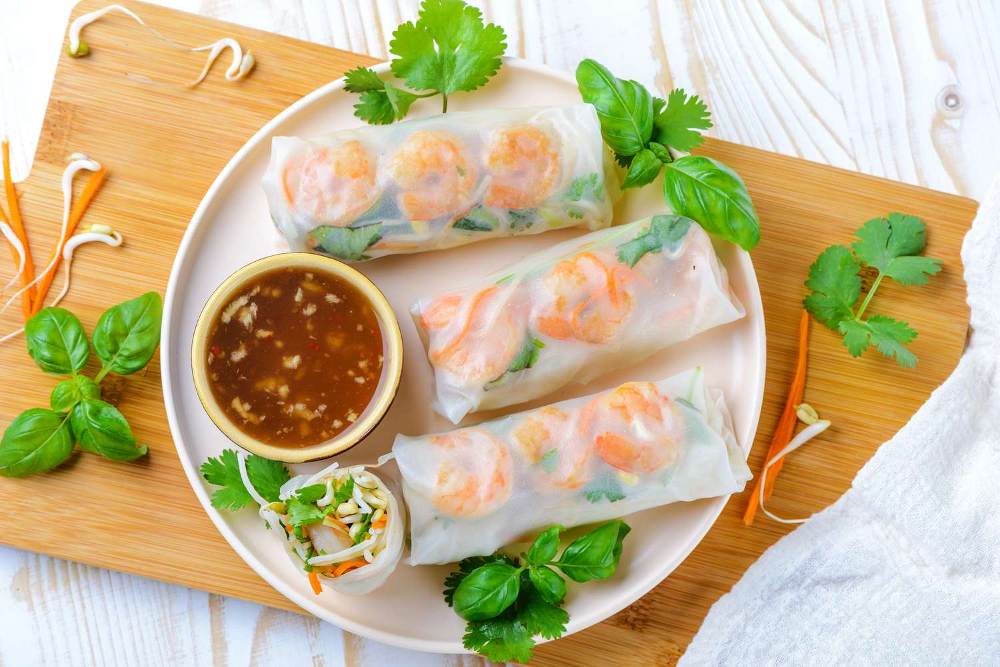
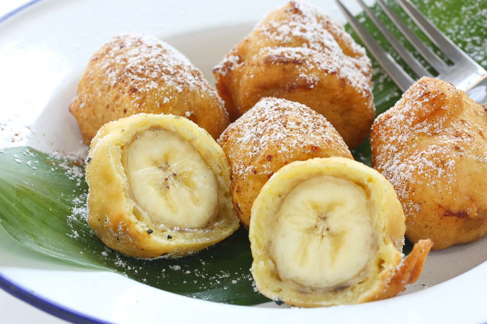
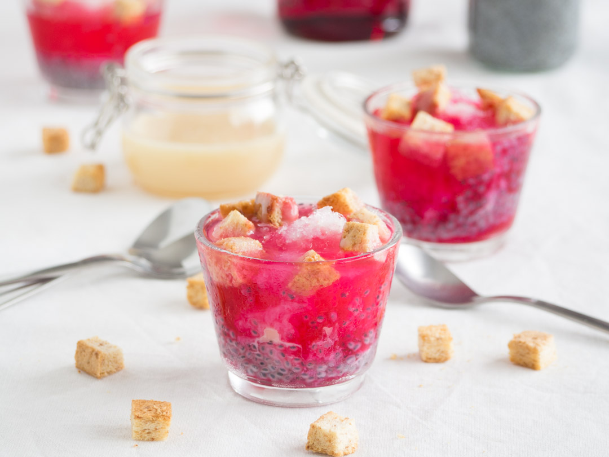

Thai Fresh Spring Roll

Ingredients
- 1 package spring roll rice wrappers , found in the Asian foods section at the grocery store
- 1 package vermicelli rice noodles , found in the Asian foods section at the grocery store
- 2 mangos , peeled and sliced into thin strips
- 1 large carrot , peeled and shredded or sliced into thin strips
- 1 large English cucumber , peeled and thinly sliced
- 1 pound small, cooked shrimp , deveined, tails removed, or substitute chicken
- 1 bunch fresh mint leaves
- 1 bunch fresh basil leaves
- 1 bunch fresh cilantro 3/4 cup sweet chili sauce
- 1/3 cup peanut butter , smooth or crunchy
- 1/2 teaspoon low-sodium soy sauce
- 1/2 teaspoon hoisin sauce
How to cook
- Cook vermicelli noodles in boiling water, for just a few minutes, according to package instructions. Drain and rinse with cold water.
- Gather all topping ingredients together, including chopped veggies, herbs, cooked shrimp.
- Add about 1 inch of water to a large, deep dish, or pie pan. Place one rice wrapper into the water and let soak for just 10-15 seconds. It should still feel pretty firm as you remove it and lay it on your counter or plate.
- (It will soften up as you add the filling ingredients, but If you let it soak for too long it will get too soft and will tear when you roll it up.)
- Layer 1-2 slices of each veggie, a few shrimp, a few leaves of each herb and a pinch of noodles on the ⅓ of the spring roll that is closest to you.
- Fold the sides of the spring roll in over the ingredients. Then pull the side closest to you up and over the ingredients, sealing everything together tightly, and rolling it up like a burrito.
- For the sauce, add all ingredients to a food processor or blender and pulse until smooth
Thai Green Papaya Salad

Ingredients
- 2 small garlic cloves (6g)
- 2 to 3 fresh Thai chiles (2 to 3g total), stemmed (see note)
- 1 tablespoon (8g) dried shrimp (see note)
- 2 tablespoons (30g) roasted unsalted peanuts, divided
- 1 tablespoon plus 2 teaspoons (35g) palm sugar, softened (see note)
- 4 cherry tomatoes (about 2 ounces; 60g), halved
- 2 long beans (about 30g), ends trimmed, cut crosswise into 2-inch pieces
- 3 tablespoons (45ml) fresh lime juice from 2 limes
- 2 tablespoons (30ml) fish sauce
- 2 cups (6 ounces; 170g) shredded green papaya, from 1 green papaya
- Cooked sticky rice, for serving
How to Cook
- In a clay or wooden mortar, combine garlic and chiles and pound with wooden pestle until slightly slightly broken down.
- Add dried shrimp and 1 tablespoon (15g) peanuts and continue to pound until slightly broken down.
- Add palm sugar and continue to pound lightly while also working the pestle in a circular motion while applying gentle pressure to help dissolve the palm sugar, about 30 seconds.
- Add long beans and pound until slightly broken down, 15 to 30 seconds. Add tomatoes and pound.
- Add lime juice and fish sauce and stir with pestle using a circular motion until well combined and palm sugar is fully dissolved, about 15 seconds.
- Add green papaya. Holding a large spoon in your non-dominant hand while holding the pestle in your dominant hand, pound down the sides of the mortar (not the center) while simultaneously using the spoon to move the ingredients back and forth in the mortar.
- Take care not to over-pound the green papaya or it will lose its crisp texture.
Tom Yum Soup

Ingredients
- 12 oz. (350 g) shrimp or tiger prawn, head-on and shell-on
- 2 1/2 cups shrimp stock (preferred), canned chicken stock, or water
- 1 stalk lemongrass, cut into 3-inch strips, pounded with a cleaver
- 3 slices galangal
- 6 kaffir lime leaves, bruised
- 6 bird's eyes chilies, pounded
- 6 fresh oyster mushrooms, cut into pieces
- 2 tablespoons nam prik pao, Thai roasted chili paste
- 2 tablespoons nam prik pao oil
- 3 teaspoons fish sauce
- 3 1/2 tablespoons lime juice
- Cilantro leaves, for garnishing
How to cook
- Peel the shell and head off the shrimp, keep the tails on. Save the shell and shrimp head. Devein the shrimp and set aside.
- In a pot, bring 3 cups of water to boil. Add the shrimp head and shell to make shrimp stock. Boil until the water turns slightly orange in color. Press the shrimp heads with a spatula to extract the juice from the heads. Simmer and let the stock reduce to 2 1/2 cups. Drain the shrimp stock and discard the shrimp heads and shells.
- Turn the heat to high and add the lemongrass, galangal, kaffir lime leaves, bird's eye chilies, mushroom, nam prik pao and nam prik pao oil to the shrimp stock. Bring it to boil.
- Add in the shrimp and fish sauce. Lastly, add the lime juice (if you add lime juice too early, the soup might turn bitter). Boil until the shrimps are cooked, dish out, and garnish with cilantro leaves. Serve immediately.
Thai Coconut Soup

Ingredients
- 1 tablespoon vegetable oil
- 2 tablespoons grated fresh ginger
- 2 teaspoons red curry paste
- 1 stalk lemon grass, minced
- 4 cups chicken broth
- 3 tablespoons fish sauce
- 1 tablespoon light brown sugar
- 3 (13.5 ounce) cans coconut milk
- ½ pound fresh shiitake mushrooms, sliced
- 1 pound medium shrimp - peeled and deveined
- 2 tablespoons fresh lime juice
- salt to taste
- ¼ cup chopped fresh cilantro
How to Cook
- Heat oil in a large pot over medium heat. Add ginger, curry paste, and lemongrass; cook and stir in the hot oil for 1 minute.
- Gradually stir in chicken broth, then stir in fish sauce and brown sugar; reduce heat to low and simmer for 15 minutes.
- Add coconut milk and mushrooms; cook and stir until mushrooms are soft, about 5 minutes.
- Add shrimp; cook until no longer translucent, about 5 minutes. Stir in lime juice; season with salt and garnish with cilantro.
Pad Thai

Ingredients
- 8 oz. wide rice noodles
- 2 tbsp. lime juice
- 2 tbsp. brown sugar
- 1 tbsp. fish sauce
- 1 tbsp. low-sodium soy sauce
- 1/4 tsp. cayenne pepper
- 2 tbsp. vegetable oil
- 1 bell pepper, thinly sliced
- 2 cloves garlic, minced
- 2 eggs, lightly whisked
- 1 lb. shrimp, peeled and deveined
- Freshly ground black pepper
- 2 green onions, thinly sliced
- 1/4 c. roasted peanuts, chopped
How to cook
- In a large pot of salted boiling water, cook noodles until al dente. Drain.
- In a small bowl, whisk together lime juice, brown sugar, fish sauce, soy sauce, and cayenne pepper. Set aside.
- In a large nonstick pan over medium-high heat, heat oil. Add bell pepper and cook until tender, about 4 minutes. Stir in garlic and cook until fragrant, about 1 minute more. Add the shrimp and season with salt and pepper. Cook until pink, about 2 minutes per side.
- Push the shrimp and vegetables to one side of the pan and pour in the egg. Scramble until just set then mix with the shrimp mixture. Add the cooked noodles and toss until combined. Pour in the lime juice mixture and toss until the noodles are coated.
- Garnish with green onions and roasted peanuts before serving.
Thai Traditional Desserts
Thai Mango Sticky Rice

Ingredients
- 1½ cups glutinous (sweet) rice
- 1⅓ cups well-stirred canned unsweetened coconut milk
- ⅓ cup plus 3 tablespoons sugar
- ¼ teaspoon salt
- 1 tablespoon sesame seeds, toasted lightly
- 1 large mango, peeled, pitted, and cut into thin slices (at least 24)
How to make
- In a bowl wash rice well in several changes of cold water until water is clear. Soak rice in cold water to cover overnight.
- Drain rice well in a sieve. Set sieve over a large deep saucepan of simmering water (sieve should not touch water) and steam rice, covered with a kitchen towel and a lid, 30 to 40 minutes, or until tender.
- While rice is cooking, in a small saucepan bring 1 cup coconut milk to a boil with ⅓ cup sugar and salt, stirring until sugar is dissolved, and remove from heat.
- Transfer cooked rice to a bowl and stir in coconut-milk mixture. Let rice stand, covered, 30 minutes, or until coconut-milk mixture is absorbed. Rice may be prepared up to this point 2 hours ahead and kept covered at room temperature.
- While rice is standing, in cleaned small pan slowly boil remaining ⅓ cup coconut milk with remaining 3 tablespoons sugar, stirring occasionally, 1 minute. Transfer sauce to a small bowl and chill until cool and thickened slightly.
- To serve, mold ¼ cup servings of sticky rice on dessert plates. Drizzle desserts with sauce and sprinkle with sesame seeds. Divide mango slices among plates.
Thai Fried Bananas

Ingredients
3/4 cup sunflower oil or other neutral frying oil, more as needed
2 to 4 regular bananas (or 6 to 8 mini sweet bananas)
1/4 cup all-purpose flour
1/4 plus 1/3 cup rice flour, more as needed, divided
1/4 cup cornstarch
1/4 teaspoon salt
3 tablespoons dried shredded unsweetened coconut, more as needed, divided
1/3 cup cold water
1/3 teaspoon baking soda
1 large egg
Few drops vanilla
How to make
- Heat a wok or skillet with oil about 3/4 to 1-inch deep.
- Meanwhile, prepare the bananas by peeling and slicing them in half. Then slice each section in half again, but lengthwise this time.
- In a medium mixing bowl, place all-purpose flour, 1/4 cup of rice flour, cornstarch, salt, and 2 tablespoons of the shredded coconut and stir to combine.
- In a measuring cup, mix together cold water with baking soda until dissolved and pour into bowl with flour mixture.
- Add the egg and the vanilla. Stir well until fully combined.
- Place remaining 1/3 cup rice flour in a separate, dry bowl and add remaining one tablespoon shredded coconut. Mix well and set next to the batter.
- Dip banana pieces first in the batter, then gently dredge them in the rice flour-coconut mixture. This last step helps firm up the batter and is the secret to creating a crisp, rather than soggy, coating.
- Carefully place coated bananas in the hot oil. Fry approximately 1 minute per side, or until batter puffs up slightly and turns light- to medium-golden brown.
- Serve your fried bananas as soon as possible as is, or with a side of coconut or vanilla ice cream.
Thai Shaved Ice Dessert

Ingredients
- 1 tbsp dried basil seeds
- 1 cup ice, shaved
- 10 g croutons , bread, cut into chunky bite size pieces
- 3 tbsp red syrup, or any of your choice
- 1 tsp sweetened condensed milk
How to make
- Soak dried basil seeds in ½ cup of warm water for 30 minutes.
- Assemble the dessert in a bowl by layering soaked basil seeds, ice, and croutons in order.
- Pour as much syrup as desired over the ice and drizzle with condensed milk.
- Serve and enjoy.